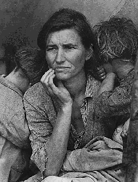
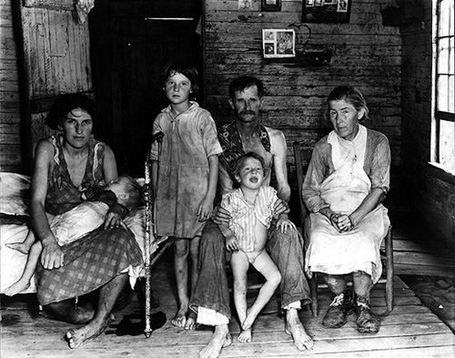
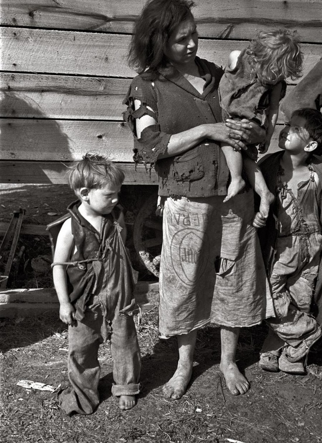
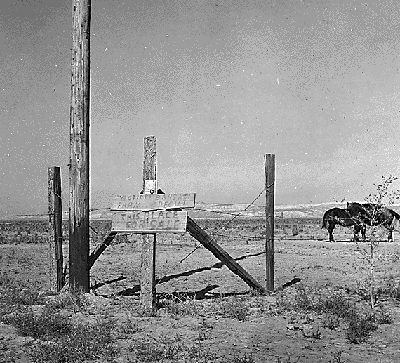
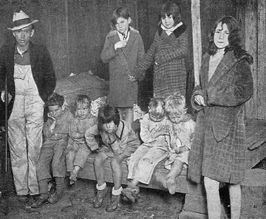
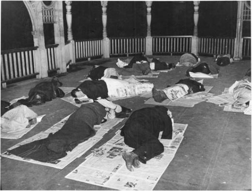
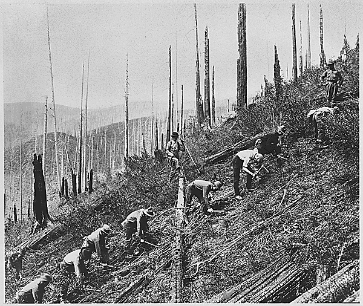
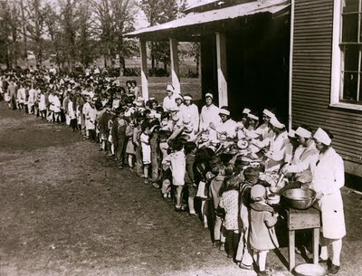
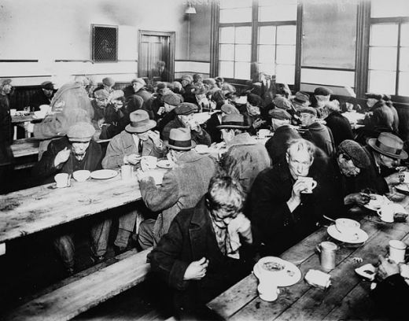
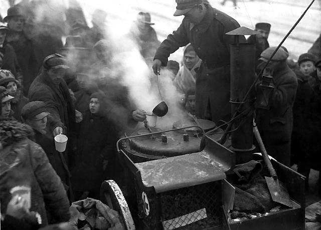

http://www.rusproject.org/node/1287
Павел Краснов
Как жили крестьяне на Западе в 30-х?

Родители семьи из 9 человек, живущей в поле, США, Теннеси, 1935
Если сравнивать жизнь советских колхозников не с неким абстрактным идеалом в голове всяких странных, не с жизнью людей в абсолютно других условиях десятки лет спустя, а взять для сравнения, время, когда жили сталинские колхозники. Можно с определёнными допущениями их сравнить, например, с реальностью, в которой существовали сельские жители стран Северной Америки тех лет - США и Канаде. Это одни из самых богатых западных стран, мировые лидеров в области сельского хозяйства, образец «демократии», «прав человека», «свободного рынка» и т.п. для граждан с альтернативным восприятием реальности. Эти страны имели по отношению к СССР колоссальную фору - они уже провели свою индустриализацию более 70 лет назад, не знали войн на своей территориии в течение многих десятков лет, у их порога тогда не собирались вражеские армии, там не было аграрного перенаселения, особенно в Канаде. Кроме всего этого у стран Северной Америки есть огромное природное преимущество перед Россией – климат. Даже в сельскохозяйственных районах Канады он намного мягче, чем в России и условия для земледелия существенно лучше. Те заселённые широты, которые в Канаде считаются севером, в России относятся к югу, а американские равнины существенно более влажные, чем русские степи.
В южных штатах США в условиях субтропического климата фермеры снимают три (!) урожая в год. Никаких запасов сена на зиму и трат земли на это, просто выгони животное в поле – и всё. Фермеру в тёплых краях не надо надрываться, чтобы посеять всё за две недели, когда «день год кормит», чтобы уложиться в самые короткие в мире сроки вегетационного периода, а потом убирать срочно, до распутицы, заморозков и снега. Для дома достаточно поставить коробку из досок, которую можно практически не отапливать. По сравнению с климатом России – просто рай. Да ещё капитализм, рынок, «демократия» и «выборы из двух и более кандидатов». Как, интересно, жили в те годы в столь благодатных местах? А жили там на удивление плохо.

Семья Издольщика. США, Арканзас 1935

Доротея Лаундж. США, 1936. Мать Семерых Детей. (Другое название - мать-беженка)
Комментарий фотографа (Доротея Лаундж) к этому снимку: "Этой женщине - 32, они питаются овощами, которые остались на полях после заморозков и птицами, которых удается убить детям, они жили в палатке. Палатку пришлось продать, чтобы купить еду детям."Всего было, как минимум 4 миллиона таких "мигрантов", как их ласково называют официально.
Интересно, что в 1930 году только на 13% ферм США было электричество, что является общеизвестным фактом. Только в 1936 году появился государственный акт об электрификации. Надо же, пришлось суетиться правительству Рузвельта, рынок и частная инициатива почему-то ничего сами не смог наладить.

Семья американского фермера-бедняка, 30-е
Период Великой Депрессии для американских канадских фермеров, как пишут даже в энциклопедиях – время «ужасающих страданий». [1]

Семья фермера. "Люди живут в невероятной бедности." США, Оклахома 1936
В начале 30-х в США была засуха и это сильно ударило по американским крестьянам, по-ихнему - фермерам. Для сравнения - в середине 30-х в СССР тоже была очень сильная засуха и, несмотря на климат, не то что не произошло никакой катастрофы – страна продолжала развиваться самыми быстрыми в мире темпами. Но кроме засухи для американских крестьян пришла беда посерьёзнее – падение цен на продовольствие. Просто из-за Великой Депрессии народ США обеднел и стал намного меньше есть. Власти и банки требовали от фермеров срочно сокращать посевы и уничтожать излишки продовольствия. Через пару лет это (в 1933 г) правительство Рузвельта в рамках «Нового Курса»приняло акт «о коррекции» сельскохозяйственного производства («AgriculturalAdjustmentAct1933»), который определял правила выплат тем фермерам, которые сокращают посевы, закапывают зерно в землю и т.п. Потрясающе, не правда ли? В это время в стране голодали десятки миллионов людей, умирали от голода и недоедания, минимум, сотни тысяч, а рядом с ними, под охраной уничтожалось продовольствие.
Стейнбек рассказывал как это происходило:"Апельсины целыми вагонами ссыпались на землю. Люди едут за несколько миль, чтобы подобрать выброшенные фрукты, но это совершенно недопустимо... Миллионы голодных нуждаются в фруктах, а золотистые горы поливают керосином... Жгите кофе в паровозных топках. Жгите кукурузу вместо дров - она горит жарко. Сбрасывайте картофель в реки и ставьте охрану вдоль берега, не то голодные все выловят. Режьте свиней и зарывайте туши в землю, и пусть земля пропитается гнилью. Это преступление, которому нет имени. Это горе, которого не изменить никакими слезами. Люди приходят с сетями вылавливать картофель из реки, но охрана гонит их прочь... слышат визг свиней, которых режут и засыпают известью в канавах, смотрят на апельсинные горы, по которым съезжают вниз оползни зловонной жижи; и в глазах людей поражение; в глазах голодных зреет гнев..." [2]
И что характерно, никто не осмеливается говорить о «рукотворном голоде» , хотя это как раз именно он самый. Никто не захлёбывается истериками о «преступном бесчеловечном режиме», «неэффективной экономике», хотя это именно она.

Отчаяние. Дети, живущие в поле, США, 1935
Ещё одной бедой там и массовое истощение почвы из-за хищнической эксплутатции. Истощённые почвы без посевов стало уносить ветрами. Целых четыре поколения фермеров высасывали из земли всё, что можно по принципу «после нас - хоть потоп», совершенно обычный принцип капитализма. Бери от жизни всё сейчас, не думай о завтра, это проблема будущих поколений, пусть они и заботятся. Когда уничтожали СССР нам рассказывали, что если земля будет собственностью крестьянина, он будет о ней заботиться. Однако, катастрофическое истощение почвы произошло в США, а не в СССР. Практика показала, что о земле лучше заботится плановая экономика и человек, думающий об обществе, а не ослепленный эгоизмом туповатый ограниченный частник.
При частной инициативе и «демократии» прошло всего три года, как инициативные фермеры, и местные власти начали шевелиться и всего через год (в 1934) был издан первый законодательный акт, т.н. «Акт о пастбищах», который ограничил действия, вызывающие эрозию и разрешал выделить деньги правительству штата на организацию лугов на месте полей . Правда за это время успело пойти по миру 20% фермеров, а на селе тогда жила треть населения США. Большинство фермеров оказалась в долгах у банков и «невидимая рука рынка» начала уничтожать не вписавшихся. Вооружённые «агенты банков», то есть нанятые бандиты и «охранные агентства»рыскали по просторам Северной Америки, выбрасывая фермеров из домов.

США 30-е. Разорившаяся семья фермера уходит со своей земли куда глаза глядят

Разорившаяся Ферма на Продаже. США 1933
В США скрывают сколько людей погибло от голода 30-х годов. Официальные статистические данные за самый тяжёлый – 1932 год уничтожены, официально – отчёты якобы «не составлялись.» По всей видимости, в 30-е годы в США погибли от голода миллионы людей. Анализ половозрастной пирамиды показывает демографический провал в 5-7 миллионов человек, большинство из которых составляют дети, как и бывает при голоде. Но это косвенные оценки, реальная информация скрыта. Рассказывающих об этой трагедии в США травили внесудебными расправами, сажали в тюрьмы как «коммунистических агентов» и «советских шпионов» до 60-х годов.
В наиболее тяжёлом 1932 году в США более 25% всех семей не имели вообще никакого дохода. [3] Так и хочется спросить: «Так что нам говорили насчёт колхозов?» Четверть населения богатейшей страны мира – в абсолютной нищете, в то время как даже в 20% самых беднейших колхозах у людей был какой-никакой, а доход, не говоря уже об их более успешных собратьях. Но в СССР – оказывается был ад, а в США – естественные трудности.

Семья бедняка, США, 30-е
Десятки миллионов разорившихся отчаявшихся людей бежали в другие районы, где им казалось, что выжить проще. Так была заселена Калифорния, имевшая до этого весьма низкую плотность населения. Кому повезло жили в лачугах и благотворительных ночлежка, кому меньше - в палатках, кому нет - на улице. Дети мерли как мухи. Тысячи 13-14 летних детей, у которых родители умерли от голода и болезней или более не могли их содержать, годами ездили по стране на крышах товарных вагонов, перебиваясь случайной работой, попрошайничая, воруя, погибая и пропадая без вести.

Бездомная семья путешествует на товарных поездах в поисках любой работы. Всё их имущество - рядом с ними. США 30-е.
Вот такой он был в Америке в те годы хруст «большого Мака.»
В СССР тогда было бесплатное медицинское обеспечение и образование. В «светоче демократии» всё просто и рыночно: хочешь, чтобы ребёнок остался жив – плати. Кстати, как, интересно, у детей тех американских крестьян было с образованием? Многие ли из них стали профессорами, академиками, врачами, генералами, крупными государственными деятелями? Как, неужели никто? СССР, кстати, таких случаев просто не счесть.

Отчаяние. Без Гроша в Кармане. Лагерь беженцев от голода. США, Калифорния 1937
В то время как Советская Страна бурлила от народной энергии и энтузиазма, Америку, да и весь Западный мир охватили отчаяние и чувство безнадёжности. Это не выдумки сталинской пропаганды, это американцы даже сейчас вполне открыто пишут о себе сами.

Бездомные ночуют на маленькой железнодорожной станции. США, 30-е
Мне лично довелось общаться с людьми, пережившими Голод Великой Депрессии в США и Канаде. Они сообщают о большом количестве их знакомых и родственников, погибших от голода, недоедания и болезней в эти годы. В отчаянии люди скитались по стране, пытаясь ездить на крышах товарных поездов. Их ловила и зверски избивала полиция, в участок старались не забирать, чтобы потом не кормить в тюрьме. Майкл Лукас в своей книге "Из Карпатских Гор в Канаду" вспоминает, что ослабевших от голода людей полицейские нередко просто забивали насмерть. В "оплоте демократии" и никто не нес за это никакой ответственности. Много людей упало с крыши и разбилось на ходу или нашло страшную смерть под колесами поезда, много замерли насмерть зимой в северных штатах и Канаде. Их часто даже не довозили до кладбища - закапывали где-нибудь неподалеку. Сколько погибло таких несчастных - не знает никто.

На крышах товарных поездов в поисках любой работы. США 1933.
Особенно страшным было положение «цветных» и негров. Безработица среди негров составляла 66% - 2/3. Сколько их тогда погибло – бог весть, кто их считал.

На "Общественных Работах" в Трудовом Лагере. США 1934

Работа в Трудовом Лагере. США 1934
После введения мер «Нового Курса» Рузвельта тех безработных, кого не удалось трудоустроить массово согнали в трудовые лагеря за колючую проволоку. В отличие от заключённых ГУЛАГа, осуждённых судами за совершённые преступления, заключённые трудовых лагерей не совершили никаких преступлений. Кто там говорил о правах человека и презумпции чего-то там? Кстати, обычно они не получали никакой зарплаты, в отличие от заключённых ГУЛАГа, кстати, получавших зарплату по расценкам, установленным для промышленности.

Бесплатный суп только для голодающих детей, сельская местность, США, 30-е
С начала 30-х благотворительные организации в крупных городах начали раздачу бесплатного супа для отчаявшихся. Очередь за ним нередко растягивалась на километры, хватало далеко не всем. Часто эти бесплатные столовые были единственным, что спасало людей от голодной смерти. Суп раздавали далеко не только из человеколюбия – вскоре выяснилось, что дать человеку тарелку супа проще, чем получить проблемы, когда отчаявшийся человек пойдёт грабить или воровать.

Очередь за бесплатным супом. США 1936

Лицо голода и отчаяния. Бесплатный суп, США 30-е
Как американцы относятся ко всему этому? Очень просто – «Мы через это прошли мы стали сильнее!» Более чем десятилетие отчаяния, идиотизма, голода, разорения и стагнации – повод для гордости и подтверждение стабильности строя. Почему-то в случае СССР трудности первых пары лет в намного худших исходных условиях – прямо ад, вселенская катастрофа и истерика на тему «неэффективного строя». Очевидно, это имеет отношение не к истине, а бесчестной манипуляции психикой людей.

Трущёбы бедняков Польша 30-е. Источник
Были ли проблемы у других стран в те же годы? Сколько угодно. Кроме того, полно стран со «свободным рынком», «демократией» и всем прочем, но в которых крестьяне всегда живут на грани катастрофы. Как, кстати, жили в то время мексиканские крестьяне? Поди благоденствовали, ведь у них не было ни колхозов, ни Сталина? Но как, наверное, все слышали, бедность мексиканских крестьян просто фантастическая, даром что жили и живут при «свободном рынке.» То есть даже сказочный климат недостаточно, нужна правильная социальная система. Очень бедно жили крестьяне в те годы и в других западных странах. Очень плохо жили в Англии, Франции, Ирландии. В Польше в 30-е годы был настоящий голод, погибло много людей. Кстати, некоторые потомки тогдашних жителей Западной Украины с озлоблением вспоминают рассказы своих голодавших в начале 30-х родичей виня в этом по исключительной личной тупости Советскую Власть. Однако Западная Украина тогда принадлежала не к СССР, а к Польше, где голод бесплатный суп, как и в США раздавали далеко не всем.

Раздача супа голодающим Польша 1932. Источник
Михаил Шатурин хорошо написал про Израиль, как жилось тамошним крестьянам и жизнь крестьян при капитализме даже не в тридцатые годы, а во вполне себе благополучные послевоенные. «В "перестройку" и позже часто лили в уши всякое про "плохие" советские колхозы и "хорошие" израильские киббуцы. Киббуцы создавались в условиях благодатного климата, но жизнь первые годы там была очень тяжёлой. Несмотря на ложь о "добровольности вступления" сами же киббуцники признавались, что многих туда загнал голод первых лет Израиля. Он на Земле Обетованной, оказывается, был, хотя Сталина там вроде как не было. Гораздо более высокая, чем в колхозах, степень обобществления - это не оттого, что "все евреи братья", а след тяжелейшего времени. Похоже, что вообще степень обобществления до известной степени диктуется вовсе не идеологией, а пропорциональна трудностям быта. Но в случае Израиля почему-то никто не воет про "киббуцное рабство"! Хотя порядки были такими: если богатый американский дядюшка прислал киббуцнику в подарок куртку, то этот член киббуца не получал причитающуюся ему раз в 2 года телогрейку, если кто-то получал наследство, то сдавал его целиком в общий котёл. Представляете, какая бы истерика сейчас накручивалас бы, если бы в колхозники должны были бы сдавать полученное наследство кооперативу. А в киббуцах – всё так и надо. Ни одному идиоту не приходило в голову сравнивать киббуцную жизнь с "раскрученными" американскими фермами (хотя климатические условия могли бы позволить такое сравнение) и требовать "от родного сионистского государства" такой же. Напротив, имел широкое хождение такой анекдот:
Встречаются американский фермер и киббуцник. Фермер говорит:
- Если я утром сяду в свой автомобиль, то лишь к вечеру доеду до противоположного края моих владений.
На что киббуцник отвечает:
- Да-да, у нас тоже много таких автомобилей.
Кстати, насчёт американских фермеров. Мне приходилось часто бывать на канадских фермах, у меня там было много знакомых. Фермы все ОЧЕНЬ разные по степени зажиточности. Сам статус фермера ничего, кроме головной боли, не гарантирует. Самая большая привилегия фермера - жить в хорошем доме, т.к. дом этот строится на собственной земле и, обычно, силами самой семьи. В городе строить тебе дом самому не дадут – нет у тебя лицензии строителя. Т.е. платить грабительские ипотеки банкам за него не нужно. Тем не менее, есть и такие семьи, которые живут в стареньких деревянных домишках. Тёплый сортир на канадской ферме появился несколько десятков лет назад, раньше никто про такое удобство не слыхал. Сейчас появилась система государственного страхования земледельческих рисков (раньше про неё и речи не было), но фермеры объясняли мне, что самое худшее - это СРЕДНИЙ урожай (на "тройку"), т.к. при этом никакие компенсации не полагаются, а кредиты банкам и налоги выплачивать необходимо. И это всё сейчас, в 21 веке, а 70-80 лет назад было совсем по-другому.
Сравнивать надо бы жизнь первых колхозников с жизнью не фермеров, а сельскохозяйственных рабочих США всё тех же 20-30 годов. Т.е. по-нашему, батраков. Мне попалась редкая книга американского исследователя Кэри Мак-Вильямса с характерным названием "Бедствующая Земля", про американскую "сельскую идиллию". Книга была переведена на русский язык. Написана она строго научно, на основании американских официальных документов и правительственных отчётов. Никаких следов коммунистической идеологии автора я в книге не нашёл. Как же выглядел этот самый "американский фермерский рай" времён первых колхозов?
- "Возникали тысячи лачуг - так называемых "козьих ранчо", т.е. фермы с такими участками земли, на которых кое-как можно было пасти козу. В большинстве домиков нет никакой обстановки. Ящики, табуретки и скамейки заменяют стулья. Это - предел нищеты, зияющий, как открытая рана. При таких условиях широко распространены инфекционные болезни. Медицинское обслуживание почти полностью отсутствует. Процветает знахарство."
Вообще в этой книге много интересных фактов про сельскую жизнь в США. Жаль, что с 1949-го года её никто не переиздавал...»
Вывод очевиден – ничего из ряда вон выходящего на уровне жизни тех лет в колхозах не было. Были закономерные трудности организации нового дела, которые были везде и всегда. Эти трудности были весьма успешно преодолены.
В дополнение к теме видео о голодоморе в США и о дефарминге ( раскулачивании по-американски): Великий голодомор в США. "Военная тайна" 18.02.2013 (прим.: обратите внимание, что тон передачи -- антисоветский, но оправдать ситуацию в США не получается)
Более подробно о голодоморе в Европе и США можете прочитать здесь
04.22.2013